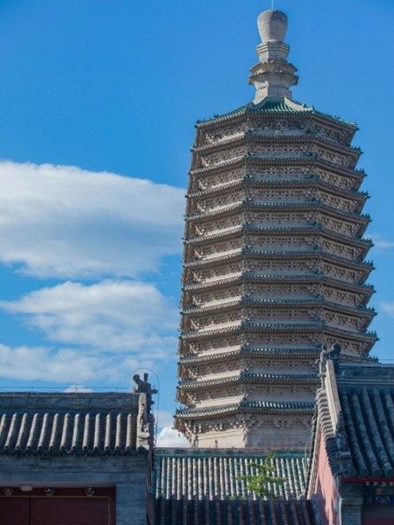

天宁寺塔介绍
天宁寺塔，作为中国古建筑的杰出代表，以其悠久的历史渊源、独特的建筑风格、精湛的建筑技艺以及深厚的文化底蕴，成为了研究中国古代佛教文化、建筑艺术以及地方历史的重要实物资料，同时也是中国乃至世界文化遗产中一颗璀璨的明珠。
地理位置与历史沿革
天宁寺塔，位于河北省邢台市的天宁寺内，始建于唐朝贞观年间，历经宋、元、明、清等多个朝代的修葺与扩建，形成了如今我们所见的雄伟壮观之貌。
建筑风格与建筑技艺
天宁寺塔采用砖石结构，整体造型挺拔俊秀，塔身共十三层，每层檐角悬挂铜铃，风吹铃响，清脆悦耳。塔身雕刻精美，无论是佛像、莲花、兽首还是几何图案，都刻画得细腻入微，栩栩如生。
建筑特色
特别是塔顶的宝瓶式刹座，更是以其造型独特、工艺精湛而著称，成为了天宁寺塔的点睛之笔。
文化内涵与历史价值
作为佛教圣地，天宁寺塔不仅是僧侣修行、信徒祈福的场所，也是古代文人墨客题诗作画、抒发情怀的胜地。塔内藏有大量的佛教经典、碑刻以及珍贵的文物。
历史见证
天宁寺塔还见证了邢台地区乃至中国北方地区的历史变迁与文化发展，成为了研究地方历史、文化、艺术以及社会生活的重要实物资料。
总结
综上所述，天宁寺塔以其悠久的历史渊源、独特的建筑风格、精湛的建筑技艺以及深厚的文化底蕴，成为了中国古代佛教文化、建筑艺术以及地方历史研究的宝贵遗产。它不仅是中国古代建筑艺术的瑰宝，也是世界文化遗产中一颗耀眼的明珠。
让我们在欣赏其雄伟壮观之貌的同时，也能深刻感受到古代中国社会的文化底蕴与精神风貌。
图片
游戏截图

实物图片
